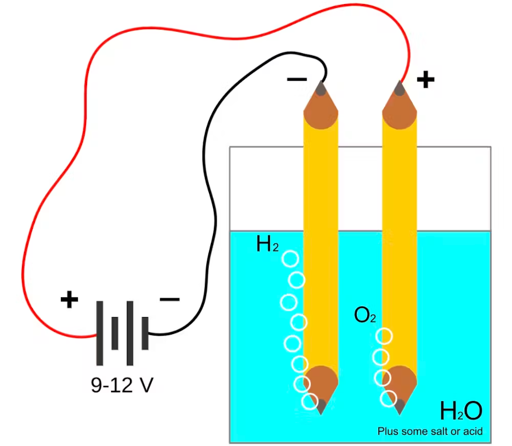

Actualment pràcticament tot l'hidrògen fabricat és l'anomenat hidrogen gris. Aquest prové del gas Metà. Perque el nostre hidrògen sigui net, hem de fabricar l'Hidrògen Verd. Aquest prové de la separació per electròlisi de l'aigua (H2O) en Hidrògen i Oxígen)
L'electròlisi és un procés en què utilitzem energia elèctrica per descompondre una substància en els seus components. En el cas de l'aigua (H₂O), l'electròlisi permet separar aquesta substància en dos gasos: hidrogen (H₂) i oxigen (O₂). El procés funciona submergint dos elèctrodes (metalls conductors d'electricitat) dins de l'aigua i aplicant-hi un corrent elèctric. Un dels elèctrodes és el càtode (on es forma l'hidrogen) i l'altre és l'ànode (on es forma l'oxigen). Quan es passa la corrent elèctrica a través de l'aigua, les molècules d'aigua es descomponen en els seus elements. A l'ànode, que és el pol positiu, les molècules d'aigua perden electrons i es produeix oxigen (O₂). D'altra banda, al càtode, que és el pol negatiu, les molècules d'aigua guanyen electrons i es produeix hidrogen (H₂). Així, l'equació química d'aquest procés seria: 2H₂O → 2H₂ + O₂, és a dir, per cada dues molècules d'aigua que es descomponen, obtenim dues molècules d'hidrogen i una molècula d'oxigen. Els gasos generats, hidrogen i oxigen, es poden recollir per separat. L'hidrogen es forma al càtode i es pot utilitzar com a combustible o en altres aplicacions industrials, mentre que l'oxigen es forma a l'ànode i es pot utilitzar en diverses indústries o fins i tot en hospitals per a la respiració. Aquest procés és una forma eficaç de produir hidrogen de manera neta, ja que només s'utilitza energia elèctrica i els subproductes són gasos que poden ser utilitzats en diversos àmbits.
Hi ha principalment dos tipus de separadors d'aigua per electròlisi: els generadors de Single Outlet i els de Double Outlet . A continuació, s'expliquen les característiques, avantatges i inconvenients de cada tipus de generador.
Els generadors de Single Outlet separen l'aigua en els dos gasos, hidrogen i oxigen, però no separen aquests gasos un cop generats. La mescla de gasos es produeix en un únic lloc, la qual cosa fa que els gasos estiguin barrejat.
Aquesta configuració té alguns avantatges:
No obstant això, també presenta alguns inconvenients:
Els generadors de Double Outlet separen els dos gasos de manera individual, traient l'oxigen per un lloc i l'hidrogen per un altre. Aquesta separació garanteix que els gasos estiguin completament independents.
Les principals avantatges d'aquest sistema inclouen:
D'altra banda, aquest sistema també té algunes desavantatges: